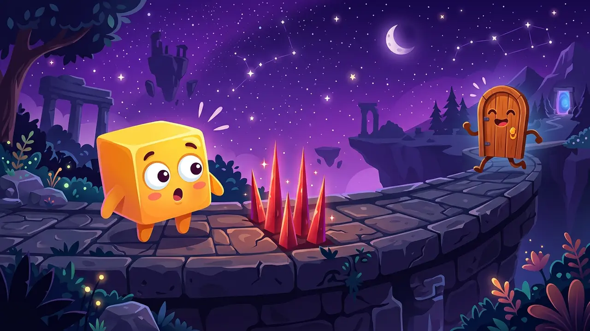
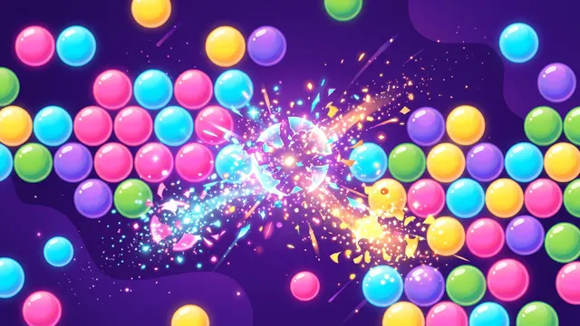

Jogos grátis, direto no navegador
Jogos originais em HTML5 para jogar no celular ou no computador. Sem baixar, sem cadastro: é só tocar e jogar.
- 9 jogos originais
- 100% grátis
- Celular e PC

Fase Troll
Plataforma de pegadinhas: o chão some, espinhos brotam e a porta foge. Zere com menos mortes.
Novos
Os lançamentos mais recentes da Órbita.
Destaques
Nossas escolhas para começar.
Todos os jogos
Filtre por categoria ou use a busca.
Fase Troll
Plataforma de pegadinhas: o chão some, espinhos brotam e a porta foge. Zere com menos mortes.
Blocos
Encaixe as peças no tabuleiro 8x8 e limpe linhas e colunas em combos.
Ordena Cores
Separe as bolinhas por cor nos tubos. Fases infinitas, do fácil ao desafiador.
Capivara Run
Corra com a capivara, pule obstáculos e colete laranjas. Até onde você vai?
Frutopia
Junte frutas iguais até formar a melancia gigante. O estilo de jogo que viralizou no mundo todo.
Órbita
Um toque troca o cometa de órbita. Pegue estrelas, desvie dos asteroides e faça combos de até x4.
Empilha
Solte o bloco na hora certa e construa a torre mais alta. Acerte o PERFEITO! para manter o tamanho.
Letrado
Adivinhe a palavra de 5 letras em 6 tentativas. Rodadas infinitas e sequência de vitórias.

PuzzleBolhas
Um toque por fase para começar a maior reação em cadeia possível. Mais de 12 fases e modo infinito.
Nenhum jogo encontrado. Tente outra palavra ou categoria.
Sobre a Órbita Jogos
A Órbita Jogos é um site brasileiro de jogos HTML5 originais. Cada jogo foi feito do zero para abrir rápido no celular e no computador, sem download e sem cadastro. Tem jogo de reflexo, de palavras, de lógica e de raciocínio, todos com recorde salvo no seu navegador.
Como escolher um jogo
- Pra relaxar: Ordena Cores e Blocos, sem tempo nem pressa.
- Pra treinar o reflexo: Fase Troll, Órbita, Empilha e Capivara Run.
- Pra pensar: Letrado, Frutopia e Bolhas.
Cada página de jogo traz um guia de como jogar, controles, dicas e perguntas frequentes. No blog tem estratégias mais detalhadas.
Do blog
Guias e estratégias para jogar melhor.
Jogos rápidos para treinar o cérebro na pausa do trabalho
Conheça jogos rápidos e gratuitos do Órbita Jogos para usar na pausa do trabalho, com sugestões de qual escolher para cada momento e como fazer pausas que realmente descansam.
Ler artigo →Como conseguir mais de 100 pontos no Órbita
Dicas práticas de ritmo, combos, power-ups e leitura de asteroides para ultrapassar os 100 pontos no Órbita, o jogo do cometa de um toque.
Ler artigo →Letrado: as melhores palavras para começar e estratégias para acertar em 3 tentativas
Veja boas palavras iniciais para o Letrado, como ler as cores verde, amarelo e cinza e um método simples para descobrir a palavra em até três tentativas.
Ler artigo →